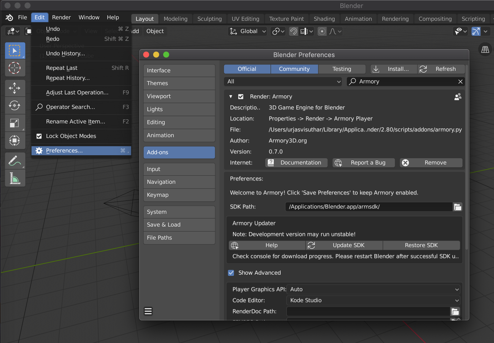

Downloading the add-on
Git
Installing Armory using Git is easy task.
- Get Blender if you don't already have.
- Open Terminal/Command Prompt, locate directory where the Blender is.
- Enter following command:
git clone --recursive https://github.com/armory3d/armsdk
cd armsdk
git submodule foreach --recursive git pull origin master
- Follow
Installing the add-onsteps.
Itch.io
- Go to itch.io, and then download
ArmorySDK-20XX-XX.zip - Unpack it and place it where ever you want.
- Follow
Installing the add-onsteps.
Installing the add-on

- Open Blender, go to
Edit - Preference,Blender Preferenceshould open, clickinstall, locate the armsdk and selectarmory.pyand clickinstall Add-on from File..and save preference(Three dash icon from bottom left corner) - Restart Blender, and head back to preference and go to
Render: Armoryadd-on, and toPreferences - SDK Pathand enter the your path to armsdk, and then finally save it again. - Restart the Blender again and Armory's new UIs should be there.
Updating the add-on
- Go to Armory add-on tab and then click
Update SDK. - Open terminal/command prompt and check the progress, when it is done, it should say
Armory is sucessfully updated. Restart Blender. - Restart Blender